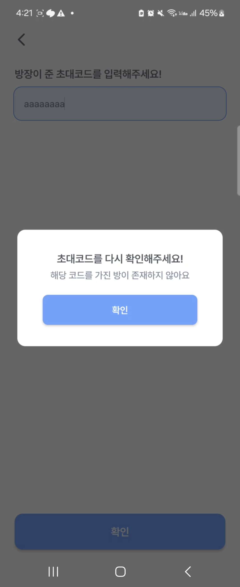
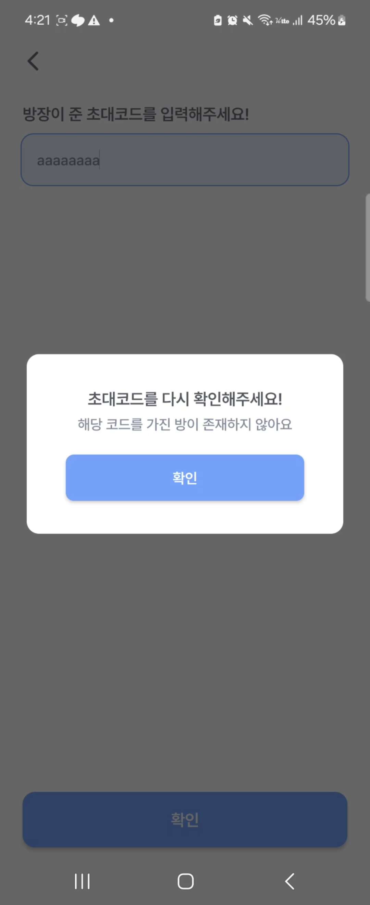
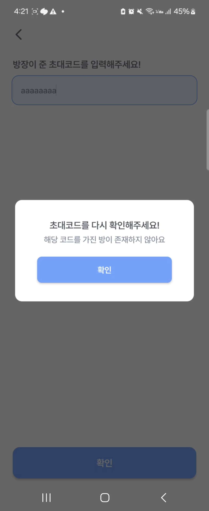
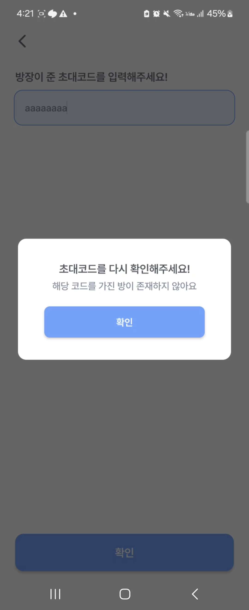
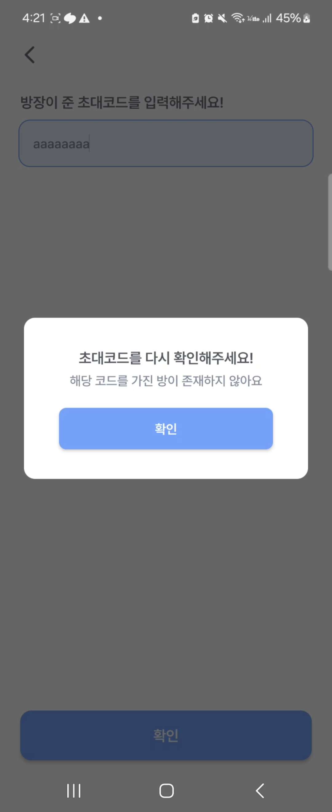

cozymate
동아리 팀 프로젝트 (PM1 BE4 AOS3 iOS2)

기숙사 룸메이트를 구할 수 있는 앱
2024.07 ~ 현재
Overview
편안한 기숙사 생활을 위해 나와 맞는 룸메이트를 탐색할 수 있도록 제작
출시 링크 (apple store / google playstore)
Skills
클린 아키텍처: MVVM
의존성 주입: Hilt
통신 라이브러리: Retrofit, Okhttp
비동기 처리: Coroutine (Debounce)
UI/UX: SwipeRefreshLayout, BottomNavigation, SearchView, Lottie, Shimmer
Result & Issues
[협업 방식 및 커뮤니케이션]
- Figma, Jira, Discord, Notion 등 다양한 협업 툴을 활용해 커뮤니케이션 및 작업
- iOS 개발자와의 협업: 플랫폼 권장 디자인 가이드를 고려해 Android와 iOS 간 UI/UX 차이를 이해하고, 일관된 사용자 경험을 제공
[담당 기능 및 기술]
- 스플래시, 로그인, 회원가입, 홈화면, 방생성 등 주요 기능을 구현함
- 스플래시 화면에 lottie 애니메이션을 도입
- Kakao SDK를 활용해 로그인 기능 구현
- 커스텀 팝업(Modal), 커스텀 DatePicker 구현현
- MVVM 패턴을 기반으로 한 RestAPI 통신 및 RoomDB, SharedPreference를 통한 캐싱 구현
[지속적인 개선]
- 아이디 중복 확인을 사용자 입력 시마다 요청하던 방식에서 Corutine과 Debounce 방식으로 1초마다 요청하도록 개선 → API 요청을 약 70% 감소하여 서버 리소스 보호
- 단순 버튼 중심이던 기존 홈화면 → 사용자 중심 콘텐츠(추천 사용자/방 컴포넌트)로 개편해 초기 몰입도를 높이고자 함
- Skeleton UI와 스와이프 새로고침 기능을 도입해 UX를 개선함
이전


 


